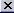

-Mina: -La más común
-Hay varias alrededor de la aldea
-Monstruos de bajo nivel las pueden encontrar
-Todos los monstruos pueden minar
-Hierro bruto: Material extraído de la mina
-Hierro (lingotes):
-Material final
-Se obtiene fundiendo Hierro en bruto
-Material Barato
-Mina: -Mena menos común
-Hay una o dos alrededor de la aldea
-Monstruos de medio nivel las encuentran
-Todos los monstruos pueden minar
-Bauxita bruta: Material extraído de la mina
-Bauxita(lingotes):
-Material final
-Se obtiene fundiendo Bauxita en bruto
-Material Barato de mayor precio que hierro
Aluminio(lingotes):
-Obtenido fundiendo hierro y bauxita, ya sea en bruto o en lingotes
-Material de precio medio, un poco menor que el precio del oro
-Utilizado como los anteriores en la construcción
-Mina: -Mena poco común
-Hay una casi gastada alrededor de la aldea
-Monstruos de alto nivel las encuentran
-Todos los monstruos pueden minar
-Oro bruto: Material extraído de la mina
-Oro(lingotes):
-Se obtiene fundiendo oro en bruto
-Material caro de mayor precio que aluminio
-Se puede usar para construcción como todos los materiales anteriores
-Puede usarse para acuñar monedas
-Mina: -Mena muy rara
-Ningún monstruo puede encontrarla
-No se encuentran alrededor de la aldea
-Todos los monstruos pueden minar
-Se encuentran ayudando otras aldeas como recompensa de misión o robando los datos
después de un ataque victorioso.
-Silicio bruto: Material extraído de la mina
-Silicio polvo: Material refinado
Silicio (oblea):
-silicio en polvo compactado y micro grabado
-Usado en mejoras de CPU y GPU y para crear nuevas aldeas
-Material el doble de caro que el oro